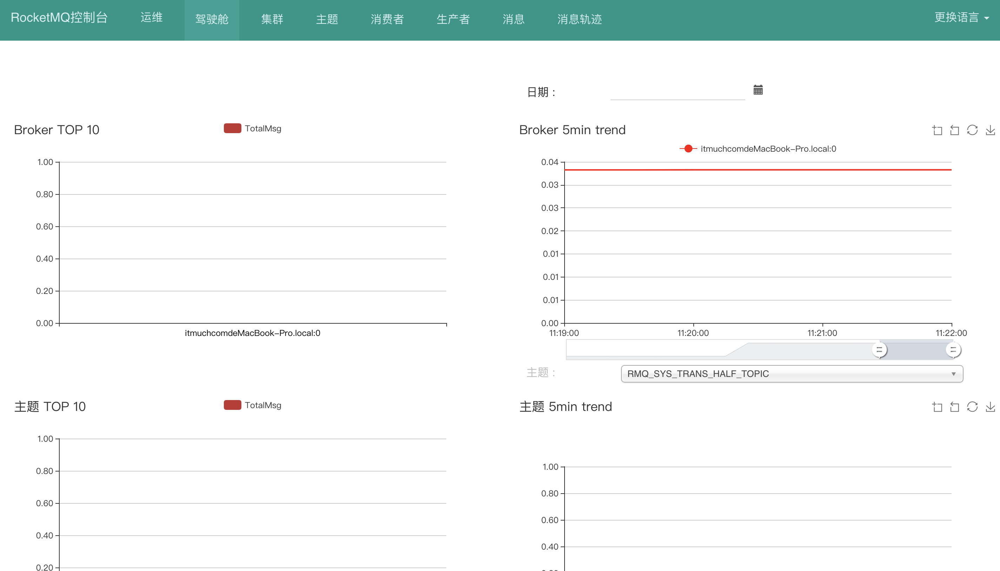

<!DOCTYPE HTML>
<html lang="zh-CN">
<head><meta name="generator" content="Hexo 3.8.0">
    <!--Setting-->
    <meta charset="UTF-8">
    <meta name="viewport" content="width=device-width, user-scalable=no, initial-scale=1.0, maximum-scale=1.0, minimum-scale=1.0">
    <meta http-equiv="X-UA-Compatible" content="IE=Edge,chrome=1">
    <meta http-equiv="Cache-Control" content="no-siteapp">
    <meta http-equiv="Cache-Control" content="no-transform">
    <meta http-equiv="pragma" content="no-cache">
    <meta http-equiv="Cache-Control" content="no-cache, must-revalidate">
    <meta http-equiv="expires" content="Mon Apr 06 2020 02:12:38 GMT+0800 (CST)">
    <meta name="renderer" content="webkit|ie-comp|ie-stand">
    <meta name="apple-mobile-web-app-capable" content="张万众的博客 - 关注Spring Cloud、Docker">
    <meta name="apple-mobile-web-app-status-bar-style" content="black">
    <meta name="format-detection" content="telephone=no,email=no,adress=no">
    <meta name="browsermode" content="application">
    <meta name="screen-orientation" content="portrait">
    <meta name="theme-version" content="1.2.3">
    <meta name="root" content="/">
    
    <!--SEO-->

    <meta name="keywords" content="安装教程,RocketMQ,Spring Cloud Alibaba">


    <meta name="description" content="RocketMQ安装教程 一节中，详细探讨了如何搭建RocketMQ，这一节来搭建RocketMQ控制台，RocketMQ的可视化管理界面。
一、下载代码12345# 方式一、git下载，执行如下命令git clone https://github.com/apache/rocketmq-ex...">


<meta name="robots" content="all">
<meta name="google" content="all">
<meta name="googlebot" content="all">
<meta name="verify" content="all">
    <!--Title-->


<title>RocketMQ控制台安装教程 | 张万众的博客 - 关注Spring Cloud、Docker</title>


    <link rel="alternate" href="../../atom.html" title="张万众的博客 - 关注Spring Cloud、Docker" type="application/atom+xml">


    

    


<link rel="stylesheet" href="../../static/css/bootstrap.min-271a649e0635d6fa1b.css">
<link rel="stylesheet" href="../../static/css/font-awesome.min-ac2bebcf7fb5b26.css">
<link rel="stylesheet" href="../../static/css/style-6f3c140f6eee20e6591da00ec0.css">


    


    <script>
        var _hmt = _hmt || [];
        (function() {
            var hm = document.createElement("script");
            hm.src = "https://hm.baidu.com/hm.js?13766878cde148282622871dd245a973";
            var s = document.getElementsByTagName("script")[0];
            s.parentNode.insertBefore(hm, s);
        })();
    </script>


    

</head>

</html>
<!--[if lte IE 8]>
<style>
    html{ font-size: 1em }
</style>
<![endif]-->
<!--[if lte IE 9]>
<div style="ie">你使用的浏览器版本过低，为了你更好的阅读体验，请更新浏览器的版本或者使用其他现代浏览器，比如Chrome、Firefox、Safari等。</div>
<![endif]-->

<body>
    
    <nav class="main-navigation">
    <div class="container">
        <div class="row clearfix">
            <div class="col-md-12 column">
                <nav class="navbar navbar-default" style="background-color:#fff;border:0;margin-bottom:0" role="navigation">
                    <div class="navbar-header">
                        <button type="button" class="navbar-toggle" data-toggle="collapse" data-target="#navbar-collapse-1">
                            <span class="sr-only">切</span>
                            <span class="icon-bar"></span>
                            <span class="icon-bar"></span>
                            <span class="icon-bar"></span>
                        </button>
                        <a class="logo" href="../../index.html">
                            张万众的博客
                        </a>
                    </div>

                    <div class="collapse navbar-collapse" style="border:0;" id="navbar-collapse-1">
                        <ul class="nav navbar-nav">
                            
                                
                                    <li>
                                        <a href="../../about.html" target="_blank">
                                            <i class="fa fa-user"></i>
                                            关于我
                                        </a>
                                    </li>
                                
                            
                                
                                    <li>
                                        <a href="../../archives.html" target="_blank">
                                            <i class="fa fa-archive"></i>
                                            归档
                                        </a>
                                    </li>
                                
                            
                                
                                    <li class="dropdown">
                                        <a href="#" class="dropdown-toggle" data-toggle="dropdown" data-hover="dropdown">
                                            <i class="fa fa-fire"></i>
                                            系列课程
                                            <strong class="caret"></strong>
                                        </a>
                                        <ul class="dropdown-menu">
                                            
                                                <li>
                                                    <a href="../../docker/00-docker-lession-index.html" target="_blank">
                                                        <i class="fa "></i>
                                                        Docker系列教程
                                                    </a>
                                                </li>
                                            
                                                <li>
                                                    <a href="../../spring-cloud/spring-cloud-index.html" target="_blank">
                                                        <i class="fa "></i>
                                                        Spring Cloud系列教程
                                                    </a>
                                                </li>
                                            
                                                <li>
                                                    <a href="../../spring-boot/spring-boot-index.html" target="_blank">
                                                        <i class="fa "></i>
                                                        Spring Boot系列教程
                                                    </a>
                                                </li>
                                            
                                        </ul>
                                    </li>
                                
                            
                                
                                    <li class="dropdown">
                                        <a href="#" class="dropdown-toggle" data-toggle="dropdown" data-hover="dropdown">
                                            <i class="fa fa-book"></i>
                                            开源书
                                            <strong class="caret"></strong>
                                        </a>
                                        <ul class="dropdown-menu">
                                            
                                                <li>
                                                    <a href="../../books/rocketmq.html" target="_blank">
                                                        <i class="fa fa-rocket"></i>
                                                        RocketMQ开发者指南
                                                    </a>
                                                </li>
                                            
                                                <li>
                                                    <a href="../../books/skywalking.html" target="_blank">
                                                        <i class="fa fa-skyatlas"></i>
                                                        Skywalking 6.2.0中文文档
                                                    </a>
                                                </li>
                                            
                                        </ul>
                                    </li>
                                
                            
                                
                                    <li class="dropdown">
                                        <a href="#" class="dropdown-toggle" data-toggle="dropdown" data-hover="dropdown">
                                            <i class="fa fa-cog"></i>
                                            工具
                                            <strong class="caret"></strong>
                                        </a>
                                        <ul class="dropdown-menu">
                                            
                                                <li>
                                                    <a href="../../tools/markdown2.html" target="_blank">
                                                        <i class="fa "></i>
                                                        微信排版工具2.0
                                                    </a>
                                                </li>
                                            
                                        </ul>
                                    </li>
                                
                            
                        </ul>
                        
                            <form id="search-form" class="navbar-form navbar-right">
                                <div class="form-group input-group">
                                    <input type="text" id="local-search-input" class="form-control" placeholder="搜我...">
                                    <span class="input-group-btn">
                                        <a class="btn btn-default">
                                            <i class="fa fa-search"></i>
                                        </a>
                                    </span>
                                </div>
                                <div id="local-search-result" class="local-search-result-cls"></div>
                            </form>
                        
                    </div>
                </nav>
            </div>
        </div>
    </div>
</nav>

    <a href="javascript:;" target="_blank">
        
    </a>


    <section class="content-wrap">
        <div class="container">
            <div class="row">
                <main class="col-md-8 main-content m-post">
                    

<p id="process"></p>
<article class="post">
    <div class="post-head">
        <h1 id="RocketMQ控制台安装教程">
            
                RocketMQ控制台安装教程
            
        </h1>
        <div class="post-meta">
    
        <span class="categories-meta fa-wrap">
            <i class="fa fa-folder-open-o"></i>
            <a class="category-link" href="../../categories/安装教程/index.html">安装教程</a>
        </span>
    

    
        <span class="fa-wrap">
            <i class="fa fa-tags"></i>
            <span class="tags-meta">
                
                    <a class="tag-link" href="javascript:;">RocketMQ</a> <a class="tag-link" href="javascript:;">Spring Cloud Alibaba</a> <a class="tag-link" href="../../tags/安装教程/index.html">安装教程</a>
                
            </span>
        </span>
    

    
        
        <span class="fa-wrap">
            <i class="fa fa-clock-o"></i>
            <span class="date-meta">2019/07/24</span>
        </span>
        
            <span class="fa-wrap">
                <i class="fa fa-eye"></i>
                <span id="busuanzi_value_page_pv"></span>
            </span>
        
    
</div>
        
        
    </div>
    
    <div class="post-body post-content" id="post-content">
        
    <div class="toc-article">
        <strong>
            目录
        </strong>
        <div class="toc-content">
            <ol class="toc"><li class="toc-item toc-level-2"><a class="toc-link" href="#一、下载代码"><span class="toc-text">一、下载代码</span></a></li><li class="toc-item toc-level-2"><a class="toc-link" href="#二、修改控制台代码"><span class="toc-text">二、修改控制台代码</span></a><ol class="toc-child"><li class="toc-item toc-level-3"><a class="toc-link" href="#2-1-修改配置"><span class="toc-text">2.1 修改配置</span></a></li><li class="toc-item toc-level-3"><a class="toc-link" href="#2-2-修改依赖"><span class="toc-text">2.2 修改依赖</span></a></li><li class="toc-item toc-level-3"><a class="toc-link" href="#2-3-修改代码"><span class="toc-text">2.3 修改代码</span></a></li><li class="toc-item toc-level-3"><a class="toc-link" href="#2-4-打包构建"><span class="toc-text">2.4 打包构建</span></a></li></ol></li><li class="toc-item toc-level-2"><a class="toc-link" href="#三、懒人包"><span class="toc-text">三、懒人包</span></a></li><li class="toc-item toc-level-2"><a class="toc-link" href="#四、启动"><span class="toc-text">四、启动</span></a></li><li class="toc-item toc-level-2"><a class="toc-link" href="#五、访问"><span class="toc-text">五、访问</span></a></li><li class="toc-item toc-level-2"><a class="toc-link" href="#六、控制台使用说明"><span class="toc-text">六、控制台使用说明</span></a></li></ol>
        </div>
    </div>


        <p><a href="javascript:;">RocketMQ安装教程</a> 一节中，详细探讨了如何搭建RocketMQ，这一节来搭建RocketMQ控制台，RocketMQ的可视化管理界面。</p>
<h2 id="一、下载代码"><a href="#一、下载代码" class="headerlink" title="一、下载代码"></a>一、下载代码</h2><figure class="highlight shell"><table><tr><td class="gutter"><pre><span class="line">1</span><br><span class="line">2</span><br><span class="line">3</span><br><span class="line">4</span><br><span class="line">5</span><br></pre></td><td class="code"><pre><span class="line"><span class="meta">#</span> 方式一、git下载，执行如下命令</span><br><span class="line">git clone https://github.com/apache/rocketmq-externals.git</span><br><span class="line"></span><br><span class="line"><span class="meta">#</span> 方式二、直接下载，访问如下地址即可</span><br><span class="line">https://github.com/apache/rocketmq-externals/archive/master.zip</span><br></pre></td></tr></table></figure>
<h2 id="二、修改控制台代码"><a href="#二、修改控制台代码" class="headerlink" title="二、修改控制台代码"></a>二、修改控制台代码</h2><h3 id="2-1-修改配置"><a href="#2-1-修改配置" class="headerlink" title="2.1 修改配置"></a>2.1 修改配置</h3><p>找到<code>rocketmq-console/src/main/resources/application.properties</code> 根据需求，修改配置</p>
<figure class="highlight plain"><table><tr><td class="gutter"><pre><span class="line">1</span><br><span class="line">2</span><br><span class="line">3</span><br><span class="line">4</span><br><span class="line">5</span><br><span class="line">6</span><br><span class="line">7</span><br><span class="line">8</span><br><span class="line">9</span><br><span class="line">10</span><br><span class="line">11</span><br><span class="line">12</span><br><span class="line">13</span><br><span class="line">14</span><br><span class="line">15</span><br><span class="line">16</span><br><span class="line">17</span><br><span class="line">18</span><br><span class="line">19</span><br><span class="line">20</span><br><span class="line">21</span><br><span class="line">22</span><br><span class="line">23</span><br><span class="line">24</span><br><span class="line">25</span><br><span class="line">26</span><br><span class="line">27</span><br><span class="line">28</span><br><span class="line">29</span><br></pre></td><td class="code"><pre><span class="line"># 管理后台访问上下文路径，默认为空</span><br><span class="line"># 如果填写，需写成/xxx的形式，例如/console</span><br><span class="line">server.contextPath=</span><br><span class="line"></span><br><span class="line"># 控制台的端口</span><br><span class="line">server.port=8080</span><br><span class="line"></span><br><span class="line">...</span><br><span class="line"></span><br><span class="line"># if this value is empty,use env value rocketmq.config.namesrvAddr  NAMESRV_ADDR | now, you can set it in ops page.default localhost:9876</span><br><span class="line"># Name Server地址</span><br><span class="line">rocketmq.config.namesrvAddr=</span><br><span class="line"></span><br><span class="line"># if you use rocketmq version &lt; 3.5.8, rocketmq.config.isVIPChannel should be false.default true</span><br><span class="line">rocketmq.config.isVIPChannel=</span><br><span class="line"></span><br><span class="line">#rocketmq-console&apos;s data path:dashboard/monitor</span><br><span class="line">rocketmq.config.dataPath=/tmp/rocketmq-console/data</span><br><span class="line"></span><br><span class="line">#set it false if you don&apos;t want use dashboard.default true</span><br><span class="line">rocketmq.config.enableDashBoardCollect=true</span><br><span class="line"></span><br><span class="line">#set the message track trace topic if you don&apos;t want use the default one</span><br><span class="line">rocketmq.config.msgTrackTopicName=</span><br><span class="line"></span><br><span class="line">rocketmq.config.ticketKey=ticket</span><br><span class="line"></span><br><span class="line">#Must create userInfo file: $&#123;rocketmq.config.dataPath&#125;/users.properties if the login is required</span><br><span class="line">rocketmq.config.loginRequired=false</span><br></pre></td></tr></table></figure>
<p>笔者只修改了如下两项：</p>
<figure class="highlight plain"><table><tr><td class="gutter"><pre><span class="line">1</span><br><span class="line">2</span><br><span class="line">3</span><br><span class="line">4</span><br><span class="line">5</span><br></pre></td><td class="code"><pre><span class="line"># console端口</span><br><span class="line">server.port=17890</span><br><span class="line"># name server地址</span><br><span class="line"># 也可以不修改，在启动完console后，在控制台导航栏 - 运维 - NameSvrAddrList一栏设置</span><br><span class="line">rocketmq.config.namesrvAddr=localhost:9876</span><br></pre></td></tr></table></figure>
<h3 id="2-2-修改依赖"><a href="#2-2-修改依赖" class="headerlink" title="2.2 修改依赖"></a>2.2 修改依赖</h3><p>修改 <code>pom.xml</code> ，修改RocketMQ相关依赖的版本</p>
<p>找到</p>
<figure class="highlight xml"><table><tr><td class="gutter"><pre><span class="line">1</span><br></pre></td><td class="code"><pre><span class="line"><span class="tag">&lt;<span class="name">rocketmq.version</span>&gt;</span>4.4.0<span class="tag">&lt;/<span class="name">rocketmq.version</span>&gt;</span></span><br></pre></td></tr></table></figure>
<p>修改为</p>
<figure class="highlight xml"><table><tr><td class="gutter"><pre><span class="line">1</span><br></pre></td><td class="code"><pre><span class="line"><span class="tag">&lt;<span class="name">rocketmq.version</span>&gt;</span>你的RocketMQ版本<span class="tag">&lt;/<span class="name">rocketmq.version</span>&gt;</span></span><br></pre></td></tr></table></figure>
<p>笔者使用的是RocketMQ 4.5.1，故而改为</p>
<figure class="highlight xml"><table><tr><td class="gutter"><pre><span class="line">1</span><br></pre></td><td class="code"><pre><span class="line"><span class="tag">&lt;<span class="name">rocketmq.version</span>&gt;</span>4.5.1<span class="tag">&lt;/<span class="name">rocketmq.version</span>&gt;</span></span><br></pre></td></tr></table></figure>
<h3 id="2-3-修改代码"><a href="#2-3-修改代码" class="headerlink" title="2.3 修改代码"></a>2.3 修改代码</h3><p>修改pom.xml后，<code>org.apache.rocketmq.console.service.impl.MessageServiceImpl#queryMessageByTopic</code> 编译会报错，所以需要解决一下。将</p>
<figure class="highlight java"><table><tr><td class="gutter"><pre><span class="line">1</span><br></pre></td><td class="code"><pre><span class="line">DefaultMQPullConsumer consumer = <span class="keyword">new</span> DefaultMQPullConsumer(MixAll.TOOLS_CONSUMER_GROUP, <span class="keyword">null</span>);</span><br></pre></td></tr></table></figure>
<p>改为：</p>
<figure class="highlight java"><table><tr><td class="gutter"><pre><span class="line">1</span><br><span class="line">2</span><br></pre></td><td class="code"><pre><span class="line">RPCHook rpcHook = <span class="keyword">null</span>;</span><br><span class="line">DefaultMQPullConsumer consumer = <span class="keyword">new</span> DefaultMQPullConsumer(MixAll.TOOLS_CONSUMER_GROUP, rpcHook);</span><br></pre></td></tr></table></figure>
<p>即可。</p>
<h3 id="2-4-打包构建"><a href="#2-4-打包构建" class="headerlink" title="2.4 打包构建"></a>2.4 打包构建</h3><figure class="highlight shell"><table><tr><td class="gutter"><pre><span class="line">1</span><br><span class="line">2</span><br><span class="line">3</span><br><span class="line">4</span><br><span class="line">5</span><br><span class="line">6</span><br><span class="line">7</span><br><span class="line">8</span><br></pre></td><td class="code"><pre><span class="line"><span class="meta">#</span> 切换到代码根目录</span><br><span class="line">cd rocketmq-externals</span><br><span class="line"></span><br><span class="line"><span class="meta">#</span> 切换到控制台目录</span><br><span class="line">cd rocketmq-console</span><br><span class="line"></span><br><span class="line"><span class="meta">#</span> 构建</span><br><span class="line">mvn clean package -DskipTests</span><br></pre></td></tr></table></figure>
<h2 id="三、懒人包"><a href="#三、懒人包" class="headerlink" title="三、懒人包"></a>三、懒人包</h2><p>笔者已经将修改好的RocketMQ控制台发布到GitHub了。</p>
<p>下载地址：<code>https://github.com/eacdy/rocketmq-externals/releases</code></p>
<h2 id="四、启动"><a href="#四、启动" class="headerlink" title="四、启动"></a>四、启动</h2><figure class="highlight shell"><table><tr><td class="gutter"><pre><span class="line">1</span><br></pre></td><td class="code"><pre><span class="line">java -jar rocketmq-console-ng-1.0.1.jar</span><br></pre></td></tr></table></figure>
<h2 id="五、访问"><a href="#五、访问" class="headerlink" title="五、访问"></a>五、访问</h2><p>访问 <code>http://localhost:17890</code> (端口用上面 <code>application.properties</code> 中的 <code>server.port=17890</code> 指定，默认是8080) ，即可看到类似如下的界面：</p>
<p></p>
<h2 id="六、控制台使用说明"><a href="#六、控制台使用说明" class="headerlink" title="六、控制台使用说明"></a>六、控制台使用说明</h2><p><a href="javascript:;" target="_blank" rel="noopener">RocketMQ控制台使用文档</a></p>

        <h2>相关文章</h2><ul><li><a href="../rocketmq-install/index.html">RocketMQ 4.5.1安装教程</a></li><li><a href="../../spring-cloud-alibaba/nacos-ha/index.html">搭建生产可用的Nacos集群</a></li><li><a href="../../install/docker-install-manually/index.html">手动安装Docker 17.06</a></li><li><a href="../../install/nginx-yum-install-in-centos7/index.html">在CentOS 7中，使用yum安装Nginx</a></li><li><a href="../../install/kafka-cluster/index.html">kafka_2.11-0.11.0.1集群搭建</a></li></ul>
    </div>
    
    <div class="post-footer">
        <div class="col-sm-10">
            <div>
                <b>本文链接</b>：<a href="" target="_blank">RocketMQ控制台安装教程</a>
            </div>
            <div>
                
                    转载声明：本博客由张万众创作，采用 <a href="javascript:;" target="_blank"> CC BY 3.0 CN </a> 许可协议。可自由转载、引用，但需署名作者且注明文章出处。如转载至微信公众号，请在文末添加作者公众号二维码。
                
            </div>
            <div>
                
            </div>
        </div>
        <div class="col-sm-2">
            
        </div>
    </div>
</article>

<div class="article-nav prev-next-wrap clearfix">
    
        <a target="_blank" href="../../other/mq-pk/index.html" class="pre-post btn btn-default" title="常用MQ产品的对比">
            <i class="fa fa-angle-left fa-fw"></i><span class="hidden-lg">上一篇</span>
            <span class="hidden-xs">常用MQ产品的对比</span>
        </a>
    
    
        <a target="_blank" href="../rocketmq-install/index.html" class="next-post btn btn-default" title="RocketMQ 4.5.1安装教程">
            <span class="hidden-lg">下一篇</span>
            <span class="hidden-xs">RocketMQ 4.5.1安装教程</span><i class="fa fa-angle-right fa-fw"></i>
        </a>
    
</div>


    <div id="comments">
        
   <p>评论系统未开启，无法评论！</p>

    </div>


                </main>
                
    <aside class="col-md-4 sidebar">
        
        <div class="widget about-me">
    <div class="row">
        <div class="col-md-5">
            
        </div>
        <div class="col-md-7">
            <a class="series-a" href="javascript:void(0)">公众号</a>
            <ul>
                <li>• 技术干货推送</li>
                <li>• 免费资料领取</li>
                <li><b>• 扫码领取更多惊喜</b></li>
            </ul>
        </div>
    </div>
    
        <div class="row">
            <div class="col-md-5">
                
            </div>
            <div class="col-md-7">
                <a class="series-a" href="javascript:void(0)">小程序</a>
                <ul>
                    <li>• 原创笔记</li>
                    <li>• 独家心法</li>
                    <li><b>• 扫码领取</b></li>
                </ul>
            </div>
        </div>
    
</div>


        
        
    <div class="ad">
        <div class="row">
            <div class="col-md-12">
                <a href="javascript:;" rel="nofollow" target="_blank">
                    
                </a>
            </div>
        </div>
    </div>


        
        <div class="widget">
    <div class="row">
        <div class="col-md-3">
            
        </div>
        <div class="col-md-9">
            <a class="series-a" target="_blank" href="../../spring-cloud/spring-cloud-index.html">Spring Cloud系列教程</a>
            <p>全面、通俗易懂的Spring Cloud教程</p>
        </div>
    </div>
    <div class="row">
        <div class="col-md-3">
            
        </div>
        <div class="col-md-9">
            <a class="series-a" target="_blank" href="javascript:;">Spring Cloud Alibaba视频教程</a>
            <p>全网唯一，你值得拥有</p>
        </div>
    </div>
    <div class="row">
        <div class="col-md-3">
            
        </div>
        <div class="col-md-9">
            <a class="series-a" target="_blank" href="../../docker/00-docker-lession-index.html">Docker系列教程</a>
            <p>Docker系列</p>
        </div>
    </div>
    <div class="row">
        <div class="col-md-3">
            
        </div>
        <div class="col-md-9">
            <a class="series-a" target="_blank" href="../../spring-boot/spring-boot-index.html">Spring Boot系列教程</a>
            <p>Boot是基石...</p>
        </div>
    </div>
</div>


        
        
    <div class="widget">
        <h3 class="title">分类</h3>
        <ul class="category-list"><li class="category-list-item"><a class="category-list-link" href="javascript:;"><i class="fa" aria-hidden="true">Docker</i></a><span class="category-list-count">31</span></li><li class="category-list-item"><a class="category-list-link" href="javascript:;"><i class="fa" aria-hidden="true">Kubernetes</i></a><span class="category-list-count">2</span></li><li class="category-list-item"><a class="category-list-link" href="javascript:;"><i class="fa" aria-hidden="true">Spring Boot</i></a><span class="category-list-count">6</span></li><li class="category-list-item"><a class="category-list-link" href="javascript:;"><i class="fa" aria-hidden="true">Spring Cloud</i></a><span class="category-list-count">94</span></li><li class="category-list-item"><a class="category-list-link" href="javascript:;"><i class="fa" aria-hidden="true">Spring Cloud Alibaba</i></a><span class="category-list-count">16</span></li><li class="category-list-item"><a class="category-list-link" href="javascript:;"><i class="fa" aria-hidden="true">Spring Cloud Stream</i></a><span class="category-list-count">1</span></li><li class="category-list-item"><a class="category-list-link" href="../../categories/其他/index.html"><i class="fa" aria-hidden="true">其他</i></a><span class="category-list-count">13</span></li><li class="category-list-item"><a class="category-list-link current" href="../../categories/安装教程/index.html"><i class="fa" aria-hidden="true">安装教程</i></a><span class="category-list-count">7</span></li><li class="category-list-item"><a class="category-list-link" href="../../categories/工作/index.html"><i class="fa" aria-hidden="true">工作</i></a><span class="category-list-count">20</span></li></ul>
    </div>


        
        
        
        

        
    </aside>

            </div>
        </div>
    </section>
    <footer class="main-footer">
    <div class="container">
        <div class="row">
        </div>
    </div>
</footer>

<a id="back-to-top" class="icon-btn hide">
	<i class="fa fa-chevron-up"></i>
</a>


    <div class="copyright">
    <div class="container">
        <div class="row">
            <div class="col-sm-12">
                <div class="busuanzi">
    
        访问量:
        <strong id="busuanzi_value_site_pv">
            <i class="fa fa-spinner fa-spin"></i>
        </strong>
        &nbsp; | &nbsp;
        访客数:
        <strong id="busuanzi_value_site_uv">
            <i class="fa fa-spinner fa-spin"></i>
        </strong>
        &nbsp; <strong>Since 2018-12-26</strong>
    
</div>

            </div>
            <div class="col-sm-12">
                <span>Copyright &copy; 2017
                </span> |
                <span>
                    Powered by <a href="javascript:;" class="copyright-links" target="_blank" rel="nofollow">Hexo</a>
                </span> |
                <span>
                    Theme by <a href="javascript:;" class="copyright-links" target="_blank" rel="nofollow">ITMuch</a>
                </span>
            </div>
        </div>
    </div>
</div>

<script src="../../static/js/jquery.min.js"></script>
<script src="../../static/js/bootstrap.min.js"></script>
<script src="../../static/js/bootstrap-hover-dropdown.min.js"></script>

    <script src="../../static/js/search-3f4fbd0557c869ca0516ebb5f.js"></script>


    <script async="" src="../../static/js/busuanzi.pure.mini.js"></script>


<script src="../../static/js/app-da10bb3b2ae5c8348d2bd2cc3faf.js"></script>


</body>
